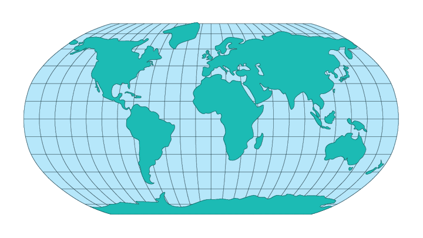

The Robinson projection is basically secant, with lines of tangency running along the 38° 0' 0"N and 38° 0' 0"S lines of latitude.
The Robinson projection in non-conformal. The distortion is not overly bad between 45° N. and S. of the Equator and 45° E. and W. of the main meridian. Outside those boundaries the distortion gets pretty bad.
The Robinson projection is not equidistant or azimuthal. There is no point or points from which all distances are shown accurately and there is no point or points from which all directions are shown accurately.
The primary purpose of the Robinson projection is to create visually appealing maps of the entire world. It is a compromise projection; it does not eliminate any type of distortion, but it keeps the levels of all types of distortion relatively low over most of the map.
* Usage information source:
Dean, Denis J. "The Robinson projection." The Arthur H. Robinson Map Library At the Univeristy of Wisconson-Madison. Colorado State University. 20 May. 2005 http://www.geography.wisc.edu/maplib/rob_proj.html